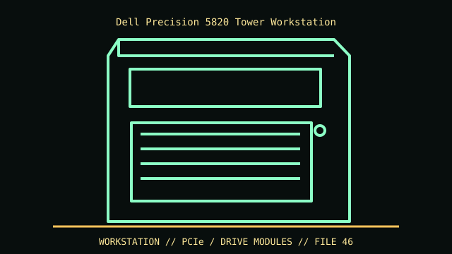

[ IDENTIFIED ENCLOSURE // PRECISION 5820 TOWER (NOT RACK 7920 OR T5820 XL) ]
Dell Precision 5820 Tower Workstation
417 × 176.5 × 518.3 mm (H × W × D); base mass about 15.4 kg. GPU length and PSU wiring depend on the FlexBay/front-cage arrangement.

VARIANT / ARCHIVAL CAVEAT: 5820 Tower differs from 5820 XL, 7820 and Rack 7920. Service tag, FlexBay, PSU and GPU power harness identify supported configuration.
Mechanical specifications and fit
| Catalog identity | Precision 5820 Tower (not Rack 7920 or T5820 XL) |
|---|---|
| Dimensions and clearances | 417 × 176.5 × 518.3 mm (H × W × D); base mass about 15.4 kg. GPU length and PSU wiring depend on the FlexBay/front-cage arrangement. |
| Drive bays / mounts | FlexBay combinations: up to four 2.5/3.5-inch, six 2.5-inch or five 3.5-inch drives depending on cage; optional front NVMe and 5.25-inch optical bay. |
| Board, system and compatibility | Dell proprietary board/PSU and storage FlexBay modules. GPU double-width length up to roughly 267 mm in specified layout; verify front cage and auxiliary power. |
| Revision / identification | 5820 Tower differs from 5820 XL, 7820 and Rack 7920. Service tag, FlexBay, PSU and GPU power harness identify supported configuration. |
Preservation and installation notes
5820 Tower differs from 5820 XL, 7820 and Rack 7920. Service tag, FlexBay, PSU and GPU power harness identify supported configuration.
Dell proprietary board/PSU and storage FlexBay modules. GPU double-width length up to roughly 267 mm in specified layout; verify front cage and auxiliary power.
- Capture the complete model/SKU, serial/date label, board assembly and bay/backplane/riser identifiers before disassembly; keep matched screws, trays, carriers, feet and cables with the case.
- Check the cited manual's specific build option before transferring hardware. Published maximum GPU, drive, fan or radiator capacity may not be simultaneous when a removable cage or alternative riser occupies that volume.
- For rack and vintage systems, preserve the exact rails, shields, doors, brackets and model-specific safety instructions; do not infer compatibility from a familiar brand or physical connector shape.
Manufacturer manuals and archival sources
- Dell Precision 5820 Tower Spec SheetPrimary manufacturer or model-specific technical/manual reference used for the identification and mechanical data above.
- Dell Precision 5820 Tower manuals and service informationSecond product manual, manufacturer resource or established technical archive; choose the exact regional SKU and revision.
When exact dimensions depend on configuration, the text says so; verify the measured specimen before making a fit or restoration decision.